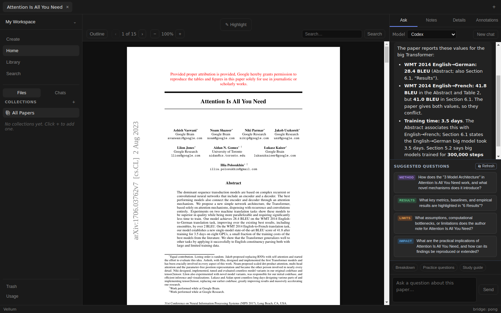
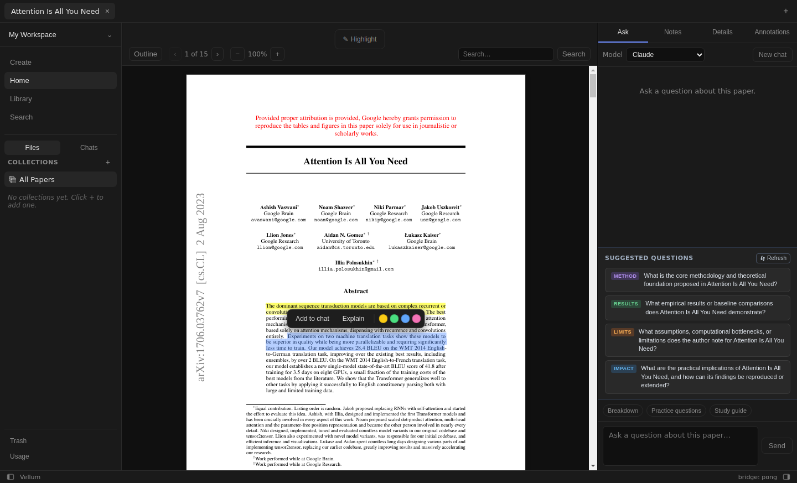
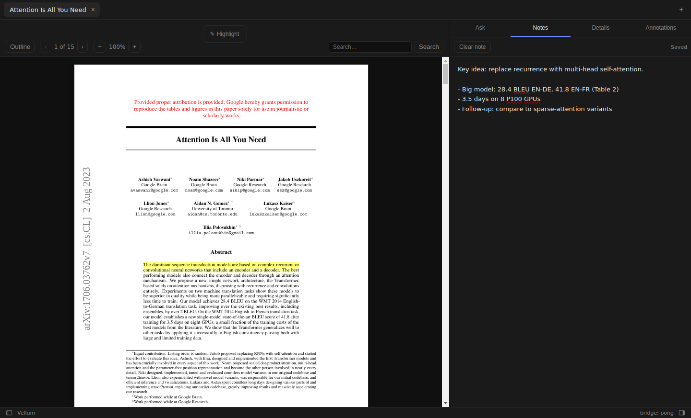
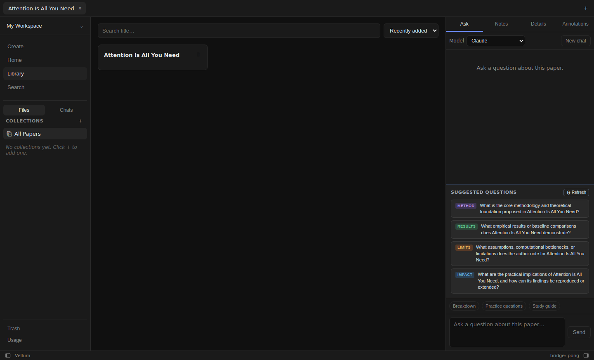

Local-first desktop workspace
Stay with
the paper.
Read closely. Ask about the difficult parts. Keep the thought that comes next.
Vellum brings your papers, AI conversations, highlights, and notes onto one desk, using the Codex or Claude plan you already have.
__APP_VERSION__ · Apple Silicon · MIT license

The reading loop
From a PDF to
your next question.
Bring the paper.
Add a local PDF, an arXiv ID, a DOI, or a PDF link. Build a library you can return to.
Work through it.
Scroll, search, and zoom. Select a passage to highlight it, add it to chat, or ask for an explanation.
Keep your thinking.
Write notes beside the page. Return to saved highlights and conversations when you pick the paper up again.
Watch a reading session
The whole workflow.
In the actual app.
Real papers and signed-in Codex.
27 verified steps, including a restart.
Part 2: restart, saved research, and cleanup
Recorded in the desktop app on Linux. See timestamps, checks, and current limits.
Inside Vellum
The page stays in view.
Actual captures from the Electron app.
Click any screenshot to inspect it.





Your working copy
Local files.
Your existing plan.
Your papers and research state stay on your machine. AI runs through your signed-in CLI.
Vellum connects to Codex or Claude through ACP adapters. There is no separate Vellum account or API key to manage.
When you use AI features, paper content and prompts are sent to your selected provider. Reading and saved research stay available locally.
Read the setup guideStart reading
Bring a paper
you want to understand.
Vellum is an early beta. Start with the Apple Silicon Mac app, or run from source. Updates arrive as occasional beta releases.